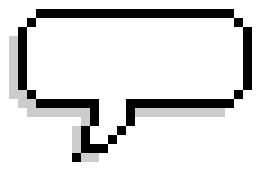
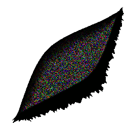
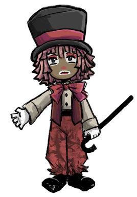
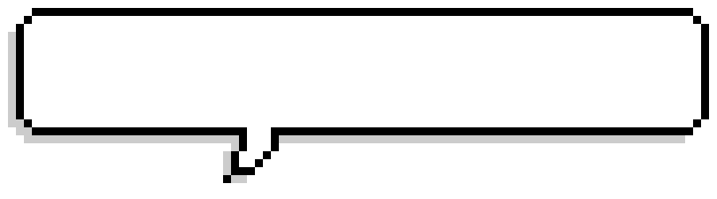
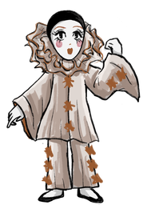
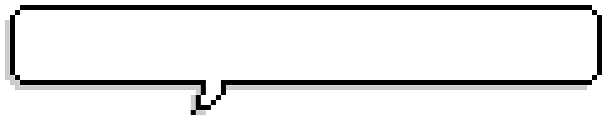
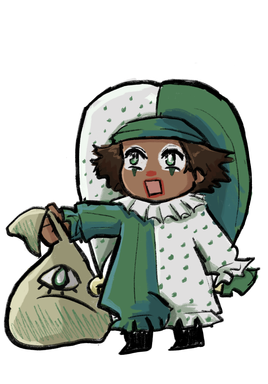
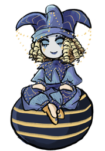
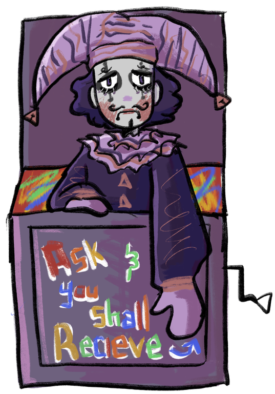

What are you?
Mac is part of a group of 6 dolls made to carry out dream related tasks. He hops in the dreams of clients to get rid of nightmares!!
He acts as the "ringleader", coordinating missions and strategizing each plan for the group.
What do you do?
Mac has the ability to enhance the powers of the group, playing a crucial role in the team. He is the face of the job in terms of outside communication as well, often handling requests and visits to other realms. He is originally a rag doll and uses that form in his everyday world. When having to interact with others in different domains, he can take on a more humanoid form (he still has doll-like qualities of stuffing as insides and fabric for hair).
No like what do you ACTUALLY do
Hobbies: Gardening, Drawing, Mapping
Likes: Gardening, Plants, Nice People, Doodling
Dislikes: Animals/Insects, Chaos, Laziness, Pranks, Sea Travel
Help?



be nice to him guys

Who are you?
Marian is another one of 6 dolls created by "The Dollmaker" for dream related tasks.
She is an assiting member, being very serious and hardworking. She tends to get frustrated easily if people dont do their job.
Ooo Cool Instrument!
Marian is very musically inclined, with her special power being a violin that allows her to alter time.
Magical Violin! - Based on the pitch and speed she plays at she can go forward or backwards in time. High Pitch - Temporarily moves forward in time up to 10 seconds(but she must return to the present timeline) (E and A string) Low Pitch - Move backwards in time up to 10 seconds (can stay in the past) (D and G string) Higher Speed - Quicker moving through time Lower Speed - Slower moving through time
What do you do?
Hobbies: Painting, Violin Playing
Likes: Music, Dance, Painting Women
Dislikes: Out of tune playing, Loud/Annoying People, Being Interrupted
Song Recs?


How are you?
Mimi is one of 6 dolls created by "The Dollmaker" to carry out dream related tasks. She is softspoken and polite (although she is judging internally 95% of the time).
She is one of the most crucial members of the group, often participating in the hands-on portions of the jobs.
Wow Umbrella
She has a magical umbrella with various abilities such as air and water transportation, teleportation and randomly spawning candy. She can also use it for combat if needed.
What do you do?
Hobbies: Collecting Seashells, Watching the Sea
Likes: Sight seeing, Aquatic Animals, Aquariums
Dislikes: Unnecessary Arguing, Navigational Errors, Manipulation, Two-Faced People
Whats your favorite sea animal?


Why are you?
Milo is a core part of the hands on mission crew.
He is very spontaneous and has a tendency to steal, making for a lot of chaos during missions.
Whats in the bag?
He helps with jobs related to item storage, using his infinitity bag, which allows him to store items regardless of size.
-Milo has a "hammerspace" bag, which he can use to store any object regardless of size (however the bigger the object, the longer it takes for the bag to consume it) -After successfully capturing an object, milo can scale it to a size of his choice and/or remove or keep it at will. -Only he has access to opening the bag and digging inside
What do you do?
Hobbies: Stealing, Collecting shiny and big things, Exploration
Likes: SHINY THINGS, BIG THINGS, Stealing, Eating Stuff (even tho he doesnt have to eat), Exploring!!
Dislikes: Getting caught, Nagging, DARKNESS
I dont have anything

When are you?
Marquette is part of the information crew for the group, being a psychic.
Marquette hates taking things too seriously and they love to tease people. Their fave thing to do is give people silly nicknames and tell stupid jokes.
Whats happening-
Seer | -Can see into the future (no control over when or what event) (KINDA LIKE THATS SO RAVEN) - Can use mirrors to see the whereabouts of somone/something (although the more specific the location request, the more illegible the projection) *so if you ask for exact location the projection would less clear than if you asked for a wider general location/ past whereabout.
What do you do?
Hobbies: Everything
Likes: SThemself, Pranks, Boring People, Luxury Items, Pretty Things, Mirrors, Jewelry
Dislikes: Dirt, Insects, Broken Mirrors, Naggy People
What do you see?


Where are you?
...
Cool box?
He can find the answer to almost any question, but can only answer in the form of a riddle
What do you do?
...
So...
